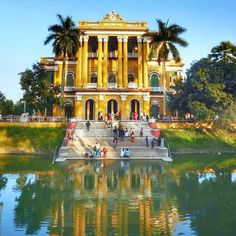
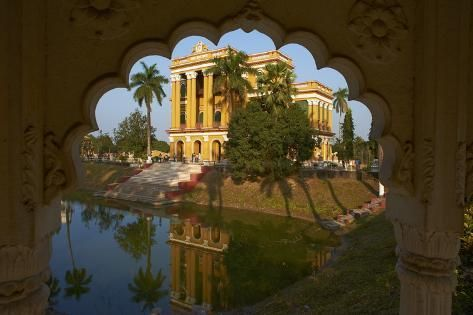

About Murshidabad
Murshidabad has historical significance as it was the capital of the Bengal region under the Nawabs of Bengal. It's known for its architectural heritage, including the Hazarduari Palace, Katra Mosque, and Nasipur Palace. The district reflects the rich Mughal influence on Bengal's culture.

